Sensor Ultra-lightweight Supervision:Active Meteorological ObservationGeneral Use System
Class Hierarchy
Go to the textual class hierarchy
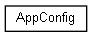
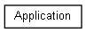
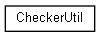
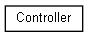
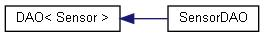
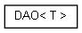
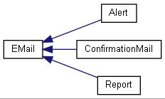
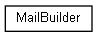
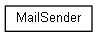
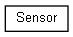
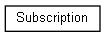
Generated on Tue Jun 22 2021 15:48:43 for Sensor Ultra-lightweight Supervision:Active Meteorological ObservationGeneral Use System by
1.9.1